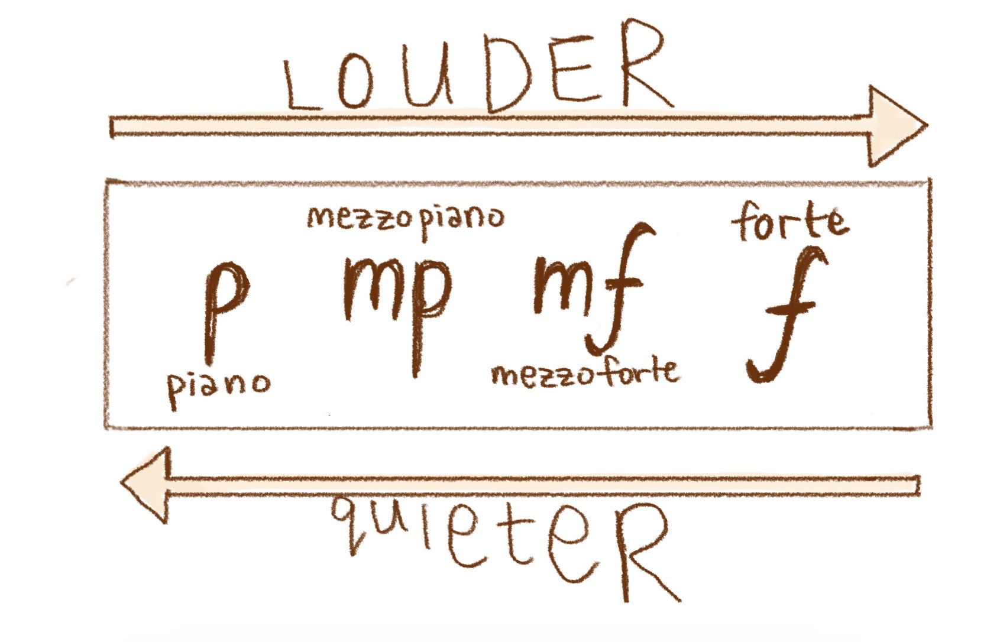
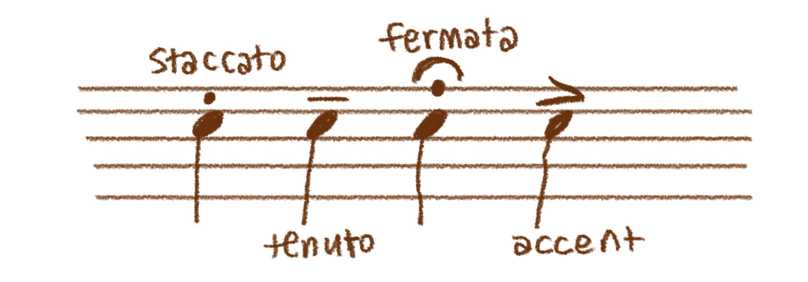

Markings are symbols and instructions on sheet music, commonly written underneath or above the stave (the 5 lines/ 6 lines in tablature). This is one of the fundamentals to learning the guitar, so you can understand when reading sheet music, the queues to be louder, quieter, slower, and so much more different playing styles. Music markings and symbols are what manipulate and shape our music, to sound more humanely!
Dynamics in music, is the variation in the loudness of a song. They can change between
parts of songs, and have symbols to signify when on the music.
The dynamic f, is a shortened italian term for 'forte', deriving from the latin term 'fortis' (loud).
As expected from the latin word, f means to play loud! But if the composer or sheet music wants you to play louder
than f, there will be more fs (ff, fff, ffff, even fffff!). These in order, are named fortissimo, fortississimo, fortissississimo, and fortississississimo!
The possibilities in range are endless ☆ ☺
The dynamic p, is a shortened italian term for 'piano', which means soft, or quiet.
Essentially, this dynamic on the page tells you to be quiet! Quieter terms go the same like forte. p, pp, ppp, which
stand for piano, pianissimo, and pianississimo.
The dyanmic mf or mp, means 'mezzoforte' and 'mezzopiano'. 'mezzo',
an italian term meaning medium or moderate, signifies that mf means 'moderately loud', and mp means
'moderately quiet'. Dynamics with mezzo give a more specific range in dynamics, allowing composers
to be free with their intentions and choices.
There are many more such as sfz (sforzando - a sudden emphasis on a note), or fp (fortepiano- loudly then immediately softly),
however the terms p, f, and mf/mp are the fundamentals to reading sheet music markings.

Articulations are symbols in music that determine how its played, usually affecting its
pitch and duration of it.
The articulation 'staccato', is a dot directly above a note value. this means that the note should be
played short, and sharp and not elongated. However, this can also have different variations
such as 'staccatissimo', which means to play even shorter and even sharper! ☻
'Tenuto', is an articulation that instructs to hold the full value of the note, or sometimes longer.
Tenuto has a symbol of a long dash above the note value. Sometimes people call the feeling of this articulation,
'leaning' on the note!
A 'Fermata', is an articulation that instructs when written about a rest or note, that it should be
held longer than intended. Many people call this a pause, and it calls for more free pausing for the
musician to choose themself, or in orchestral context, the conductor's freedom. Fermatas are
written over notes or rests, and looks like a dot, and a half circle curve above the dot.
An 'Accent', is simply an accent, written over notes, and look like a sideward arrow. This
means to excentuate or emphasise the note, in its original note value. Accents sometimes are used
to manipulate the base rhythm, or to give an implication to certain genres like bossa nova, and
samba which are genres with intended specific accents at places.
And of course, there are many more than this. Articulation help can be found on
Music theory academy's website
for more detailed explanation.

Back to top of page